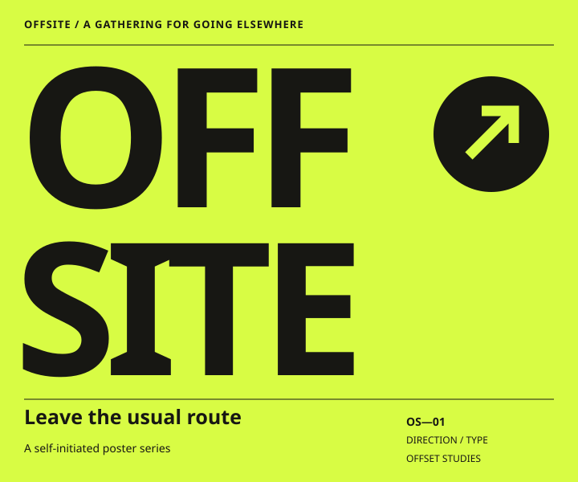
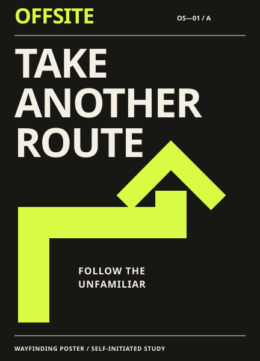
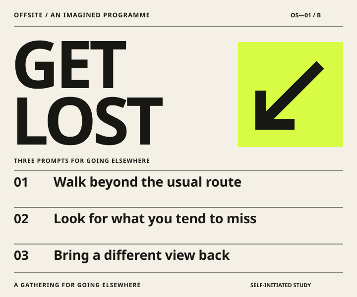

Offsite

Directional type · Two-color system · Poster format
How can a poster suggest movement before it says where to go?
An oversized word becomes a field to navigate. The arrow interrupts its rhythm; the small route language gives the gesture a purpose.
Self-initiated graphic study. The gathering is fictional; no event or commissioned campaign is represented.
The same direction, two other voices
The arrow and compact type move from a loud announcement into wayfinding and a readable programme.


Your shortlist 0
Keep the studies that interest you, then describe what you would like to explore. This is a local practice task.
No studies saved yet. Open a study and choose “Add to shortlist”.
Prepare an enquiry draft
Use fictional details for the practice brief. Nothing is sent. Save explicitly to keep your entries in this browser.
Prepare a draft to see the exact text here.